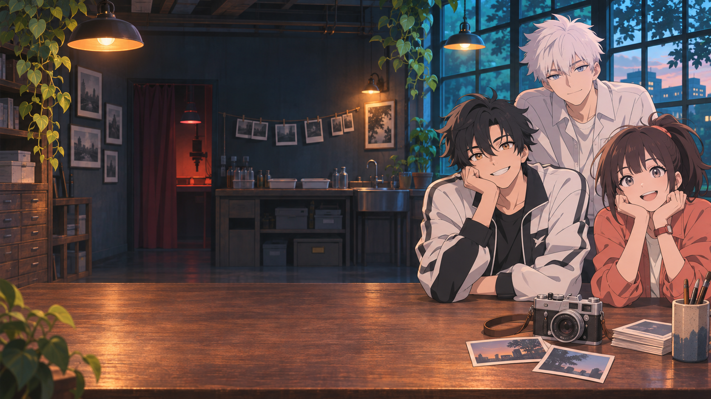

和程小石、陸洸、喬玲一起，把每一次思考，變成通往全紅的線索。
翻動一顆棋子，上下左右一起翻面。把棋盤全部變紅，就成功了！
點一下棋子，它和上下左右的鄰居一起翻面。讓整片棋盤變紅吧！
個人練習模式：尚未連結老師課堂。

先填寫姓名，再按「開始新挑戰」。
輸入管理密碼，即可查看全班學生紀錄。
管理密碼由老師保管，學生不需要登入。
每 10 秒自動更新。點選學生姓名，即可展開查看每一局探索。
更新後，下次登入請使用新密碼。學生的課堂碼不會改變。
本次挑戰會保存下來，之後可以在「我的紀錄」回顧。